READY FOR OWNER REVIEW · Bản cục bộ. GitHub Pages chưa được cập nhật. Cần duyệt đúng manifest mới. Không Phase3B-E, merge main hay thay đổi v0.5.
CHƠI TỪ VỊ TRÍ HIỆN TẠI · Review Portal /26NPC / Daily Life · Manifest đầy đủ · QA · Tồn tại
Đang đọc manifest của chính gói đang mở…
Tiếp cận Nayeon · nhiệm vụ củ cải: nói chuyện, nhận hạt miễn phí, đến mép luống01, E/chạm → xới → chọn củ cải → gieo → tưới → đóng bảng xem cây → thu hoạch sau6giây → về Nayeon → trả lời tiếng Hàn. Sai có giải thích và câu khác; đúng mới nhận18xu/20gameXP.
Tiếp cận Minseo · cửa hàng: nhận nhiệm vụ chợ, mua hạt hành lá6xu, gieo/tưới ở luống đã xới, thu hoạch sau10giây hướng dẫn, bán rồi trả lời câu hỏi để nhận22xu/20gameXP. Cây thường45/90giây;6luống hiện có. Bưu thiếp12xu là đồ lưu niệm từ crop nativeJeju đã duyệt. Không khóa khám phá/học cơ bản sau tiền hoặc nhiệm vụ.
WASD/mũi tên, Shift chạy, E tương tác; joystick/chạm trên mobile landscape. Lưu cục bộ; không tài khoản hay đồng bộ điểm học thật. Nội dung tiếng Hàn: PENDING_HUMAN_REVIEW. Quảng cáo DISABLED.
Bảng giá/cân bằng · Mô phỏng · Readback hai nhiệm vụ · Phạm vi quyền/asset mới
Ghi trực tiếp điều khiển Phaser; không teleport hay sửa đồng hồ/state để hoàn thành. VideoH264 không âm thanh, không phải ảnh kiểm tra pixel. PNG gốc không sharpen/upscale.
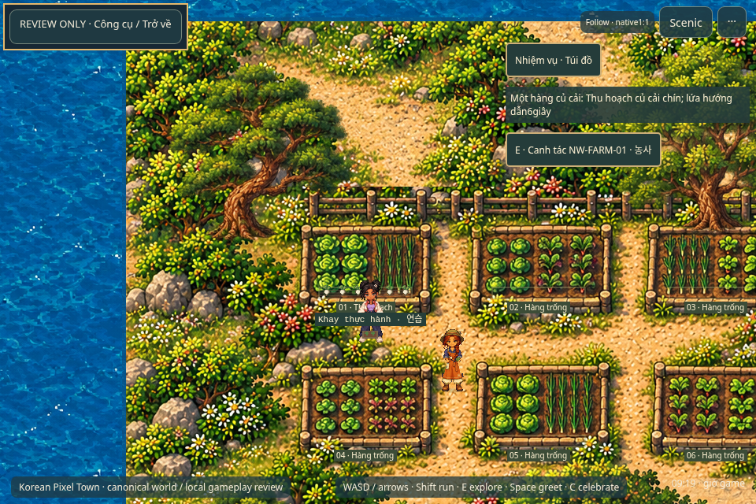
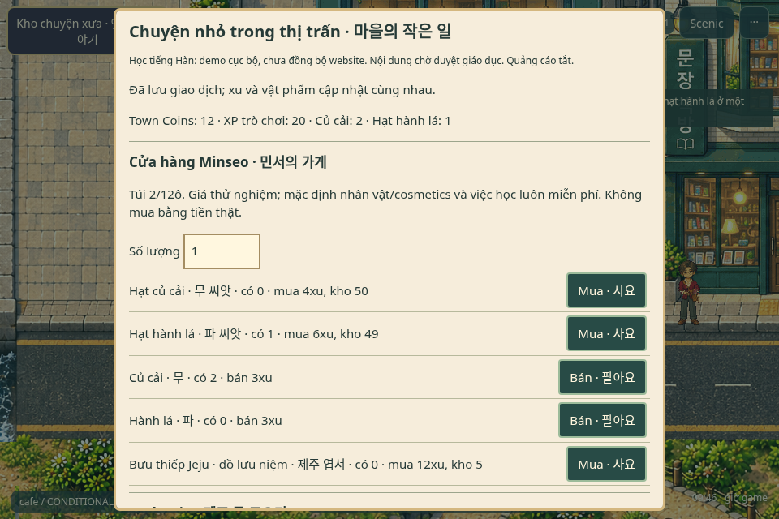
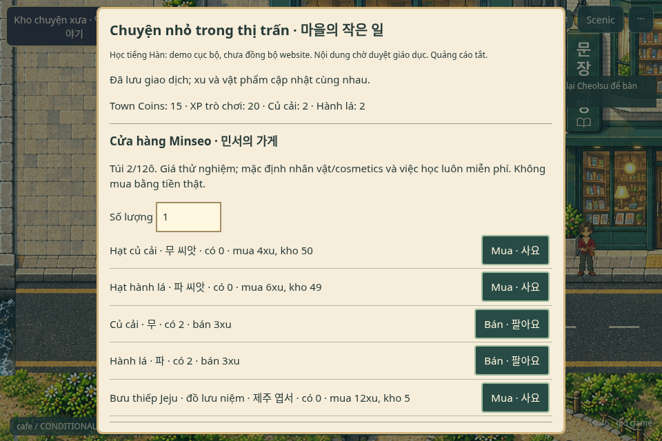
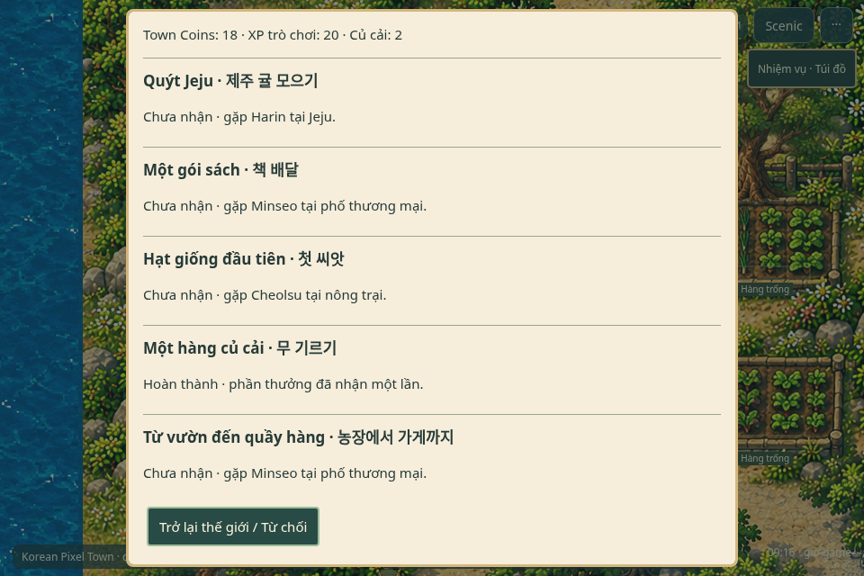
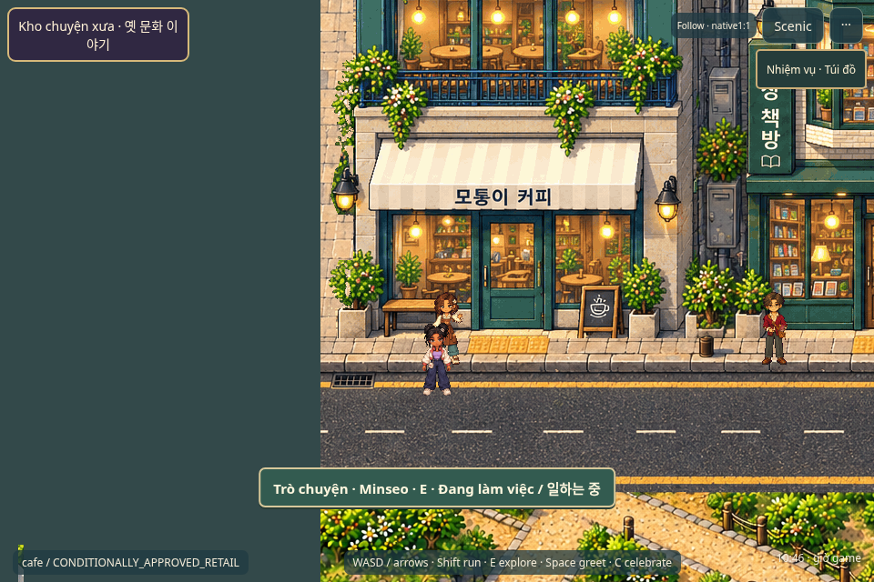
416tệp/237.886.344bytes đã git rm khỏi nhánh;183donor cần cho nguồn phục hồi chuyển byte-exact khỏi public sang archive nguồn.128ngoại lệ North/provenance/rights giữ lại có lý do. Không xóa lịch sửGit, tags hoặc main. Các phần nguồn Gate3 chưa đủ bằng chứng bị từ chối được phân loại UNCERTAIN, không auto-load/copy.
Đúng416đường dẫn + ngoại lệ · Manifest máy đọc · Inventory
index.html → src/game/main.ts → src/gate3/main.ts → public/assets/gate3/palace-cleanup-world/manifest.json.585asset trong closure hiện tại; không chọn world bằng query/dò thư mục. Guard source/build/ZIP chống tái nhập bằng đường dẫn, URL và hash map bị từ chối.
Canonical guard · Hash bảo vệ · Ba marker & carryover
Ba alias QA dùng lối có sẵn, không biến sân vườn/nước thành sàn. Không sửa geometry masterplan hay worldpixels. Station8px strip vẫn chặn; lối vòng đông giữ nguyên. Bakery còn chưa bố trí.
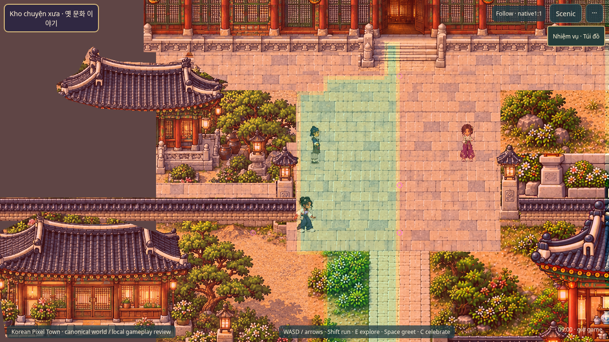
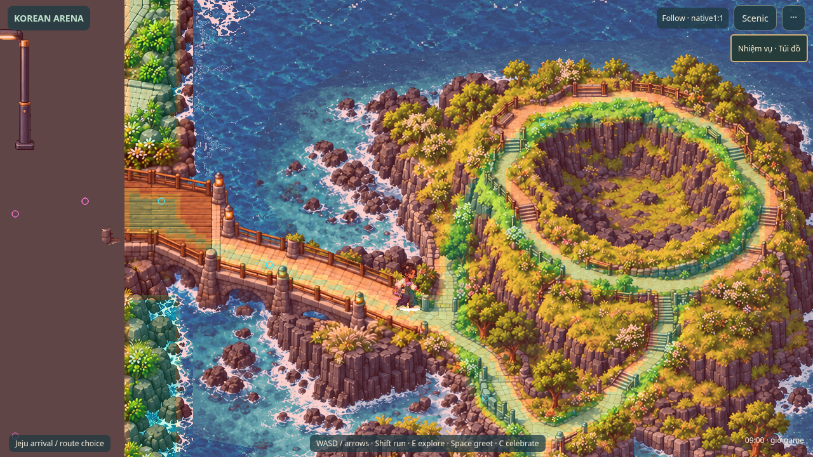
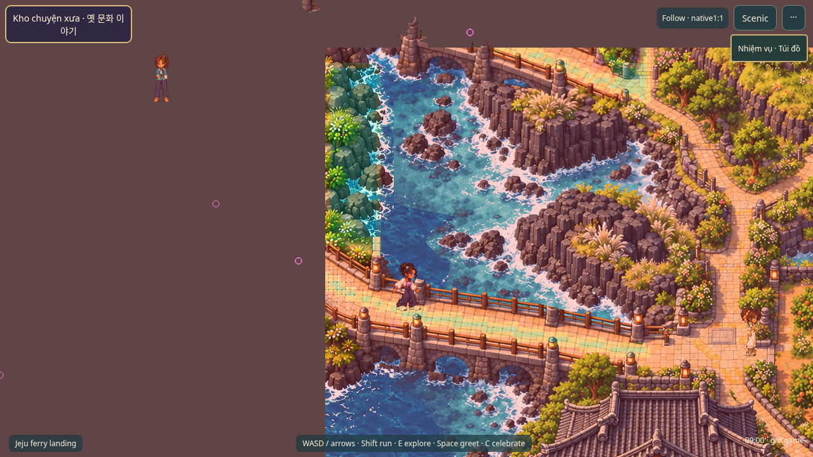
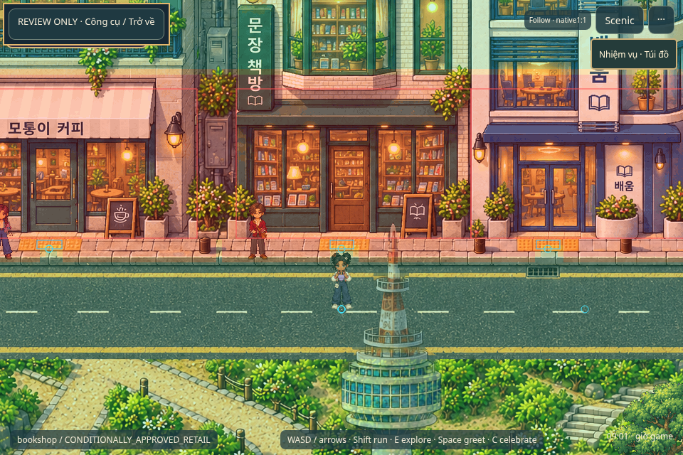
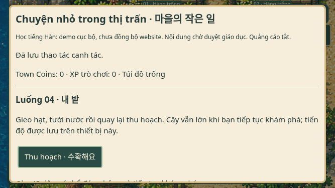
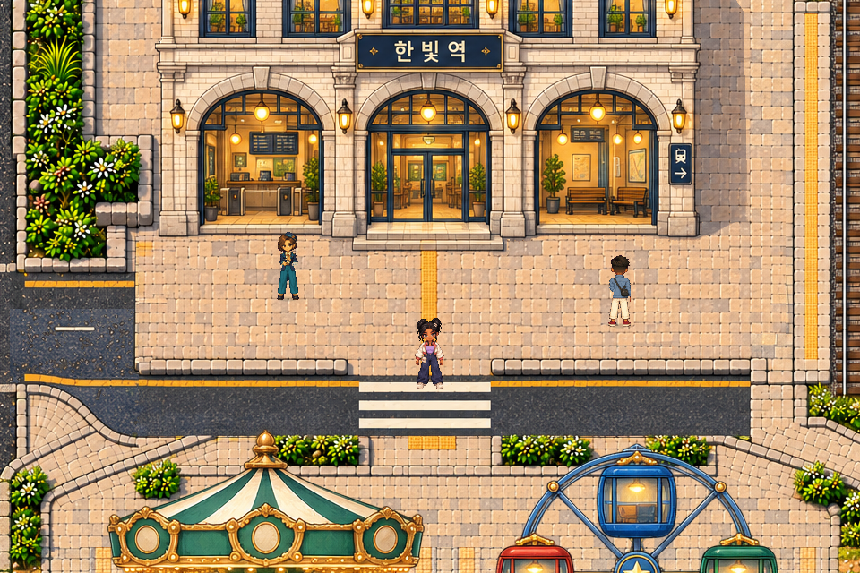
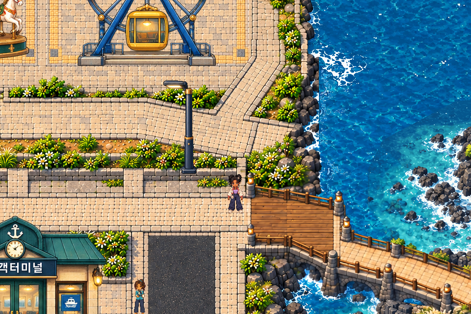
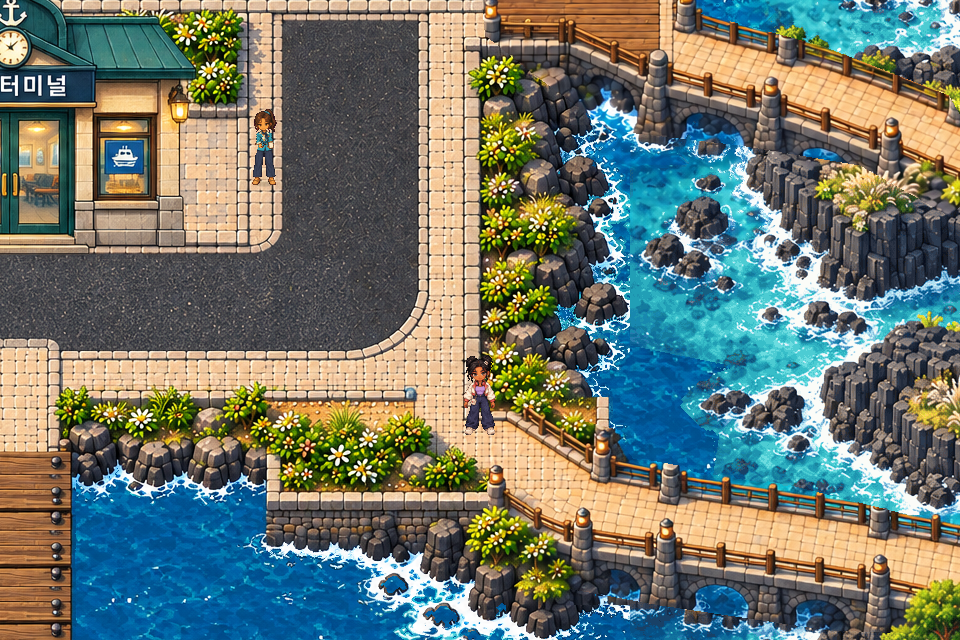
Native canvas readback · Giới hạn texture và bộ nhớ ước tính · SHA video/ffprobe
| Kiểm tra | Kết quả | Bằng chứng |
|---|---|---|
| Typecheck / assets / lint / formatting / production build | PASS | Fresh local commands; unchanged1900kB bundle-size advisory retained. CI configured, remote CI not executed. |
| Unit tests | PASS | 199/199 across28files. Offline growth/invalid actions/funds/full bags/stock/double harvest/receipt rollback/migration/world cleanup covered. |
| Initial full active E2E regression | FAIL | 63 PASS / 3 FAIL / 0 skipped. Original result retained; see HISTORICAL_FAILURES.md. |
| Isolated motion / six-identity follow-up | PASS | 12/12 locomotion runs (6actors×2) and2/2 six-identity complete dialogue runs. Follow-up total15PASS/1FAIL because worker retained the obsolete zone metadata assertion; original report retained. |
| Corrected inactive-zone lifecycle follow-up | PASS | Fresh3/3 with every physical/animation/conversation/history field frozen, bounded textures/actors, reentry/despawn and oneplayer. Only derived time-based activity metadata may follow DailyLife clock. No scheduler/gameplay changes. |
| New canonical/marker/shop/mobile targeted E2E | PASS | 6/6 independently; same6also PASS in initial full run. Legacy query/direct URL/reload requests only canonical world;3actual QA approaches; shop replay;667x375 joystick farming. |
| Two NEW actual packaged quest loops | PASS | Nayeon radish till/plant/water/grow/harvest; Minseo buy/scallion/grow/harvest/sell; wrong→different→correct; reload, one reward,37coins/40gameXP. Eight real control legs, no teleport/state/time completion override. |
| Three previous actual quest loops | PASS | Fresh isolated real Phaser delivery/orchard/practice-tray completion, wrong/different/right, reward receipts/reload; no old evidence count reuse. |
| Protected assets and roster/cosmetics | PASS | 10462 retained source/runtime files unchanged;26NPC/12player catalogs;24active cosmetics/39native variants exact,4head items remain retired in current play. Historical snapshots retain their original bytes. |
| Canonical build/source/ZIP transport guard | PASS | 585allowlisted assets;416confirmed rejected files git rm,183required donor files moved byte-exact out of public,128exceptions retained. Source/artifact/hash/CItransport guards. Final ZIP CRC/extraction/launch proof is separate. |
| Native rendering/performance | PASS | 5actual native canvas crops: zoom1/nearest/integer camera/one player. No sprite or ground resampling; runtime texture keys unique and NPC cap4. Estimates are not GPU hardware measurements. |
| New art/provenance | PASS | 6original16x20crop frames and exact128x96approved-source Jeju postcard crop; no new image-generation/provider/third-party artwork/audio/font. |
| Public exposure / artistic/curriculum approval | NOT TESTED | New exact public approval PENDING; owner gameplay/art review needed. Korean content PENDING_HUMAN_REVIEW. No public upload/deployment/main merge. |
| Physical Android/iPhone / hardware GPU | NOT TESTED | Desktop Chromium + mobile browser emulation only; no physical performance certificate. |
| Spatial/source decisions | WARN | Bakery deferred, station8px strip retained with prior eastern route, uncertain oldGate3 source classified/excluded rather than indiscriminately deleted. Historical commits not erased. |
Lần FAIL ban đầu và cách kiểm tra lại · Nội dung giáo dục chờ duyệt
Duyệt gameplay/mỹ thuật và đúng SHA manifest hiện trên trang này trước khi công khai. Mọi receipt mới vẫn PENDING; không coi đây là chứng nhận pháp lý/thương mại. Android/iPhone thật và GPU phần cứng NOT TESTED. Hai snapshot public20/26 cũ giữ nguyên để rollback. Không cập nhật Pages cho đến khi có phê duyệt mới.